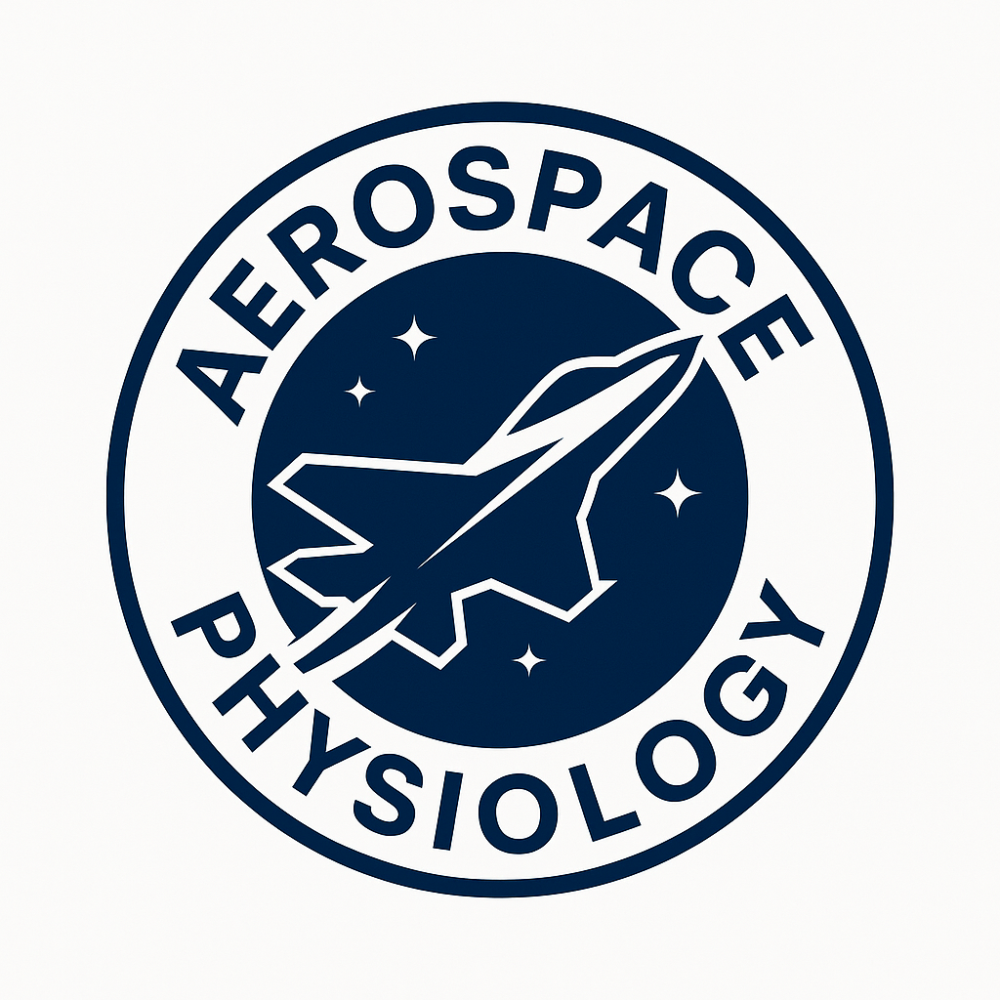

Andrew W. Wright, M.Sc.
Aerospace Physiologist
United States Navy
Email: awwright@protonmail.com
Phone: (435) 313-0652
PortfolioAndrew W. Wright, M.Sc.
Aerospace Physiologist
United States Navy
Email: awwright@protonmail.com
Phone: (435) 313-0652
Portfolio